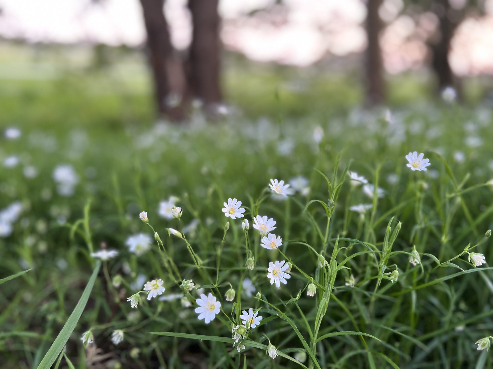

Angebot
Wie wir zusammenarbeiten können
Von der ersten Beratung bis zur fertig blühenden Fläche — praxisnah und auf deinen Ort zugeschnitten.
🌿 Biodiversität für Garten, Hof & Balkon
- Ich stelle Pflanzenoptionen und den biologischen Zusammenhang vor, die zu dir und deinem Standort passen.
- Gemeinsam entwickeln wir ein Konzept, das deinen Ort in einen Lebensraum verwandelt.
- Ich unterstütze dich bei der Beschaffung der Pflanzen und bei der Umsetzung.
- Die Beziehung zwischen dir, den Pflanzen, den Tieren und dem Boden verstehe ich als fortlaufenden Prozess — ich begleite dich über Zeit, nicht nur einmalig. Das ist ein anderes Erlebnis als klassische Dekorationsgärtnerei.

🏫 Naturnahe Schul-, Kita- & Firmengelände
Aus einem ungeliebten Schulgelände kann ein lebendiges Stück Paradies werden, das Schüler*innen, Lehrkräfte und Eltern gleichermaßen genießen — und das neuen Lebensraum für Vögel, Bienen, Schmetterlinge und kleine Säugetiere schafft. Workshops und Unterrichtseinheiten zeigen dabei die Verbindungen zwischen Tieren, Pflanzen, Geografie, Geschichte, Wirtschaft, Sprache und Handwerk auf.

🧶 Naturfasern & ganzheitliche Projekte
In einem mehrjährigen Schulprojekt rund um Schafe und Wolle habe ich Kindern und Mitarbeitenden ermöglicht, Rohwolle und Rohbaumwolle selbst zu verarbeiten: Spinnen, Weben, Stricken und natürliches Färben. So wird Nachhaltigkeit nicht nur erklärt, sondern mit den Händen erfahren.
(folgt)
🎤 Vorträge, Workshops & Beratung
Zu Ökologie, Nachhaltigkeit und dem Zusammenspiel von Tier, Pflanze und Boden biete ich Vorträge, Kurse und individuelle Beratungen an — für Privatpersonen ebenso wie für Gruppen, Schulen und Unternehmen.
(folgt)
Der nächste Schritt
Lass uns herausfinden, was zu deinem Ort passt.
Jedes Vorhaben beginnt mit einem Gespräch — ohne Verpflichtung.
Termin anfragen